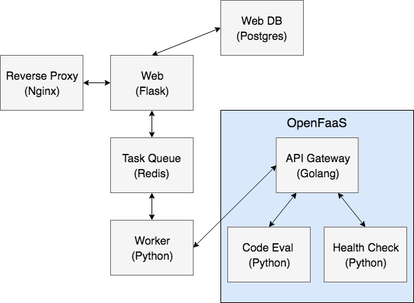
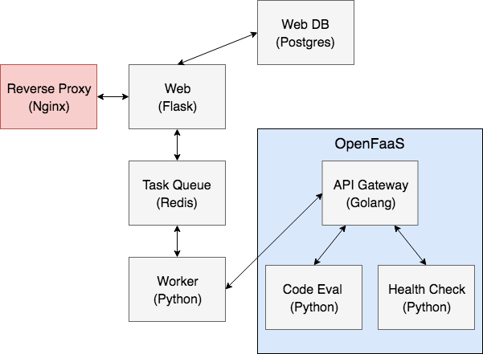
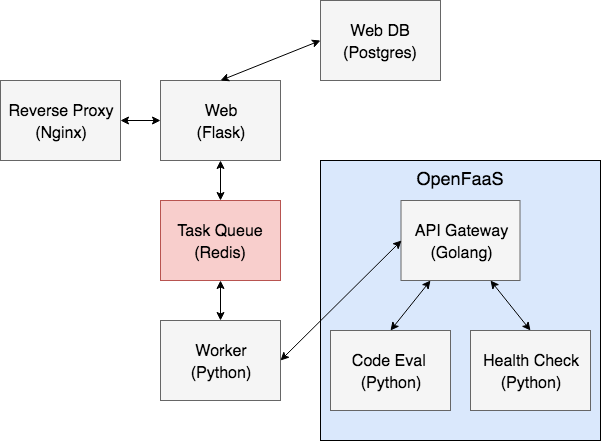
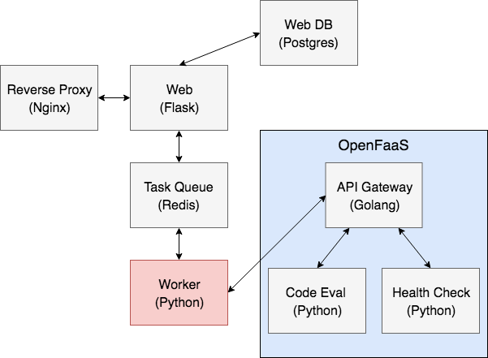
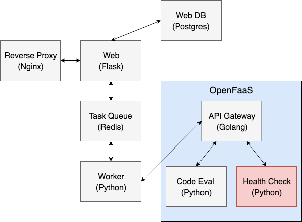
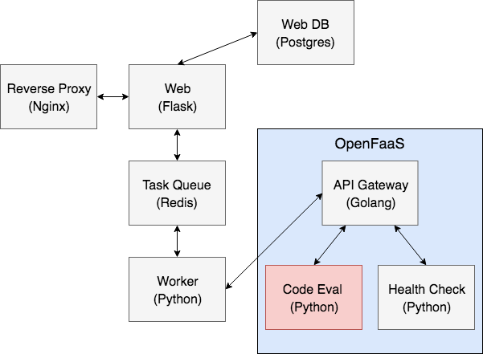
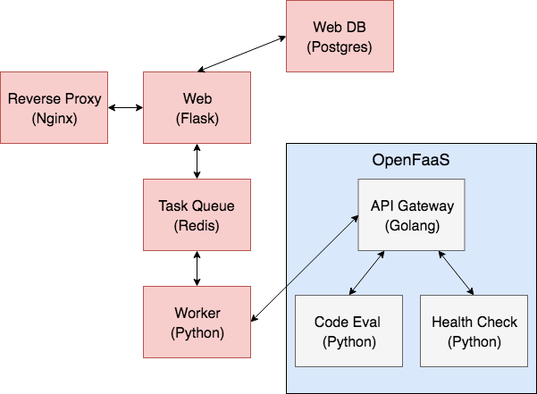
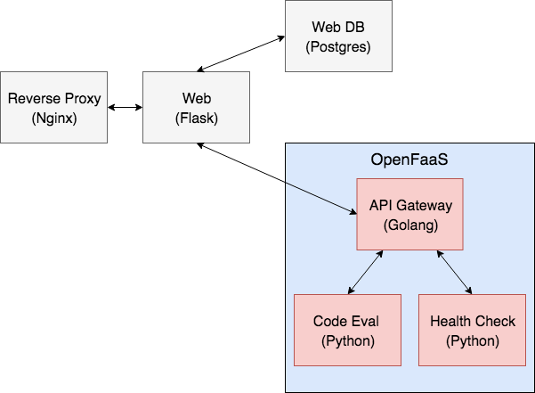
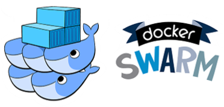
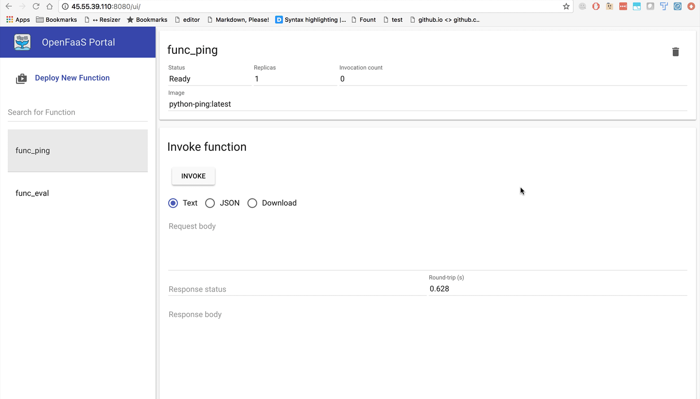

class: center, middle # Going Serverless with OpenFaaS,<br>Kubernetes, and Python <div style="text-align:center;"> <img src="images/openfaas.png" style="max-width: 25%; border:0; box-shadow: none;" alt="openfaas"> </div> <br> <div> <span style="vertical-align:60%;">Presented by <em>Michael Herman</em> at</span> <img src="images/pycon2018.png" style="max-width: 15%; border:0; box-shadow: none;" alt="PyCon 2018 logo"> </div> --- ### Agenda (part 1) ⏱ ~ 30 minutes -- ##### (1) Intro 1. About Me 1. Objectives (WIP) 1. What are we building? 1. Architecture 1. Project Setup 1. Why Microservices? -- #### (2) Theory 1. IaaS and PaaS 1. Serverless and FaaS 1. OpenFaaS --- ### Agenda (part 2) ⏱ ~ 30 minutes -- ##### (3) Web App 1. Python/Flask 1. Postgres 1. Nginx 1. Redis 1. Worker -- ##### (4) OpenFaaS 1. Health Check 1. Eval --- ### Agenda (part 3) ⏱ ~ 2 hours -- ##### (5) Deployment 1. Container Orchestration 1. Digital Ocean Setup -- ##### (6) Challenges 1. Deploy Web App 1. Deploy OpenFaaS Stack - Docker Swarm mode - Kubernetes 1. Production Dockerfiles -- ##### (7) Goodbye 1. Next Steps 1. Questions --- class: center, middle ## Intro --- ### About Michael ``` $ whoami michael.herman ``` -- #### Day Job: Software Engineer at [ClickFox](https://www.clickfox.com/). <img src="images/clickfox.png" style="max-width: 4%; border:0; box-shadow: none;" alt="clickfox logo"> -- #### Docker: 1. Avid Docker user since 2014. 1. Last year I architected and set up [On-Demand Environments With Docker and AWS ECS](http://mherman.org/blog/2017/09/18/on-demand-test-environments-with-docker-and-aws-ecs/). -- #### Also: 1. Co-founder/author of [Real Python](https://realpython.com) 1. 😍 - [tech writing/education](http://mherman.org), [open source](http://github.com/mjhea0), [financial models](http://www.starterfinancialmodel.com/), [radiohead](http://radiohead.com/) <img src="images/me.png" style="max-width: 10%; border:0; box-shadow: none; padding-top:10px" alt="me"> --- ### Objectives By the end of this talk, you should be able to... -- `Containerization` 1. Configure and run **microservices** locally with Docker 1. Utilize **volumes** to mount code into a container to enable **hot reload** 1. Run unit and integration **tests** inside a Docker container -- `Orchestration` 1. Explain what **container orchestration** is and why you may need to incorporate an orchestration tool into your deployment process 1. Discuss the pros and cons of using Kubernetes over other **orchestration tools** like Elastic Container Service (ECS), Mesos, and Docker Swarm 1. Integrate **Docker Hub** into the deployment process --- ### TestDriven.io Much of this tutorial comes from the following course I wrote at [Testdriven.io](http://testdriven.io/)... <br> <div class="grid"> <div style="float: left; width: 45%;"> <div text-align="center"> <img src="images/cover_small.png" style="max-width: 80%; border:2px solid; border-color:grey; box-shadow: none;" alt="microservice tech"> </div> </div> <div style="float: left; width: 55%;"> <h4 style="margin-top: 0;"><em>Microservices with Docker, Flask, and React</em></h4> <p>Along with learning how to build a number of Python-based microservices, you'll also be introduced to more advanced topics like:</p> <ul> <li>Test-driven Development (TDD)</li> <li>AWS ECS, RDS, and Lambda</li> <li>React</li> <li>Blue/Green Deploys</li> <li>CI/CD</li> </ul> </div> </div> <div class="center"> <img src="images/mobile_image.png" style="max-width: 15%; padding-top:30px; box-shadow: none;" alt="testdriven.io"> </div> --- ### What are we building? -- **OpenCI** - *"a serverless continuous integration system built with OpenFaaS"* -- <div>  </div> --- ### Architecture -- **Web App:** | Name | Container | Tech | |-----------|--------------|-------------------------| | Web | `web` | Python, Flask, gunicorn | | Web DB | `web-db` | Postgres | | Redis | `web-redis` | Redis | | Worker | `web-worker` | Python | | Nginx | `web-nginx` | Nginx | <br> -- **OpenFaas Back-end:** | Name | Container | Tech | |--------------|-------------|---------------| | API Gateway | `gateway` | Golang | | Code Eval | `eval` | Python | | Health Check | `ping` | Python | --- ### Project Setup -- Fire up the app locally: ```sh $ git clone https://github.com/testdrivenio/flask-openfaas \ --branch pycon --single-branch $ cd flask-openfaas $ docker-compose -f docker-compose-web.yml up -d --build ``` <small><em><strong>NOTE:</strong> Using Docker Machine? Replace `localhost` above with `DOCKER_MACHINE_IP`.</em></small> -- #### Docker Compose An orchestration tool for running multi-container apps. *Often, when developing applications with a microservice architecture, you cannot fully test out all services until you deploy to a staging server. This takes much too long to get feedback. Docker helps to speed up this process by making it easier to link together small, independent services locally.* Docker 101: http://mherman.org/docker-workshop <img src="images/docker-compose.png" alt="docker compose logo" style="width:50px;"> --- ### Why Microservices? -- **Pros** 1. *Separation of Concerns*: different apps can have different code bases and dependencies, localized errors, less coupling can lead to easier scaling 1. *Smaller Code Bases*: without having to grasp the entire system, it's often easier to understand the code base -- **Cons** 1. *Design Complexity*: microservices are complex, start with modules 1. *Network Complexity*: many helper functions become AJAX calls, ping-pong-like effect in terms of network requests, network lag 1. *Data Persistence*: managing state (DBs, queues, service discovery) is hard 1. *Security*: more surface area = more areas prone to attack 1. *Integration Tests*: testing is hard, especially if you try to test like you'd test a monolith -- <img src="images/microservices.png" style="max-width: 7%; border:0; box-shadow: none;" alt="microservice"> You need - *Strong communication + docs, mature devops, lots of planning* <small class="center">!!! More on microservices: https://testdriven.io/part-one-microservices !!!</small> --- class: center, middle ## Theory --- ### IaaS and PaaS -- **Infrastructure-as-a-Service (IaaS)**: IaaS models provide the base infrastructure (compute resources, networking, cloud storage) that end users then have to provision and manage on their own. *Examples*: DigitalOcean, Rackspace, parts of AWS -- **Platform-as-a-Service (PaaS)** PaaS models provide a platform for end users to manage applications without the overhead of having to set up and maintain the underlying infrastructure. *Examples*: Heroku, Elastic Beanstalk -- <p style="margin-bottom:0"> <a href="images/iaas-paas.png"> <img src="images/iaas-paas.png" style="max-width: 50%;padding-bottom:0" alt="iaas vs paas"> </a> </p> <p style="margin-top:0;"><small>(<a href="http://robertgreiner.com/2014/03/windows-azure-iaas-paas-saas-overview/">Source</a>)</small></p> --- ### Serverless and FaaS -- **Serverless**: Serverless is a cloud computing execution model that abstracts away much of the complexity associated with server management (implementing, provisioning, tweaking, scaling) from developers. Pricing models are generally based on actual resources consumed. -- **Functions as a Service (FaaS)**: FaaS is a serverless model that enables developers to run modular, stateless pieces of code in response to events (like HTTP requests). -- <div class="grid"> <div style="float: left; width: 45%;"> <div text-align="center"> <div> <img src="images/mono-micro-functions.png" style="max-width: 90%; padding-top:10px; padding-bottom:0; box-shadow: none;" alt="monolith vs microservice vs faas"> </div> <p style="margin-top:0;"><small>(<a href="http://lukeangel.co/cross-platform/docker-servless-faas-functions-as-a-service/">Source</a>)</small></p> </div> </div> <div style="float: left; width: 55%;"> <p><em>What's it good for?</em></p> <ul> <li>Handling HTTP requests</li> <li>Processing tasks from a queue</li> <li>Running cron-like jobs</li> </ul> </div> </div> --- ### Serverless and FaaS (continued...) **Question: How does FaaS differ from the PaaS model?** -- 1. *PaaS* - Applications typically run on the server at all times. 1. *FaaS* - Functions run as needed. When needed, the functions take a few milliseconds to start and then they are shut down after execution. -- **Examples of FaaS:** 1. [AWS Lambda](https://aws.amazon.com/lambda/) 1. [Google Cloud Functions](https://cloud.google.com/functions/) 1. [Microsoft Azure Functions](https://azure.microsoft.com/en-us/services/functions/) <div> <img src="images/azure_functions.jpg" style="max-width: 20%; padding-top:10px; padding-bottom:0; box-shadow: none;" alt="microsoft azure functions"> </div> -- **FaaS Advantages**: 1. *Increased velocity* (infrastructure is managed by someone else) 1. *Scalability, availabiliity, and fault tolerance comes out of the box* 1. *Decreased costs* (no idle resources) --- ### Serverless and FaaS (continued...) -- **FaaS Disadvantages**: 1. *Decreased transparency* (infrastructure is managed by someone else) 1. *Debugging* (remote debugging sucks) 1. *Confusion* (lots of moving pieces) 1. *Restrictions* (i.e., AWS Lambda functions only support certain languages and functions can only run for 5 minutes) 1. *Vendor lock-in* --- ### OpenFaaS -- [OpenFaaS](https://www.openfaas.com/) is a framework for building serverless functions on top of containers. It helps to mitigate many of the disadvantages with FaaS. You can run serverless functions: 1. In whatever language you want 1. For however long you need 1. Wherever you want <div> <img src="images/openfaas_full_logo.png" style="max-width: 35%; border:0; box-shadow: none; padding-top:10px;padding-bottom:20px;" alt="openfaas"> </div> https://blog.alexellis.io/introducing-functions-as-a-service/ -- <br> **Bottom-line:** 1. Think about how much control you need to have when choosing your cloud model. 1. What are you team's strengths and weaknesses? 1. What do you want to focus your time and resources on? --- class: center, middle ## Web App --- ### Web DB <div> <img src="images/tech_web-db.png" style="max-width:100%; border:0; box-shadow: none;" alt="tech"> </div> --- ### Web DB https://github.com/testdrivenio/flask-openfaas/tree/pycon/services/db #### Steps: 1. Review *[Dockerfile](https://github.com/testdrivenio/flask-openfaas/blob/pycon/services/db/Dockerfile)* and *[docker-compose-web.yml](https://github.com/testdrivenio/flask-openfaas/blob/pycon/docker-compose-web.yml)* 1. Build the image and run the container: ```sh $ docker-compose -f docker-compose-web.yml up -d --build web-db ``` 1. Test/Sanity Check: ```sh $ docker exec -ti web-db psql -U postgres -W ``` <div> <img src="images/postgres.png" style="max-width: 20%; border:0; box-shadow: none;" alt="postgres logo"> </div> --- ### Web <div> <img src="images/tech_web.png" style="max-width:100%; border:0; box-shadow: none;" alt="tech"> </div> --- ### Web https://github.com/testdrivenio/flask-openfaas/tree/pycon/services/web #### Steps: 1. Review the [code](https://github.com/testdrivenio/flask-openfaas/tree/pycon/services/web), *[Dockerfile](https://github.com/testdrivenio/flask-openfaas/blob/pycon/services/web/Dockerfile)*, and *[docker-compose-web.yml](https://github.com/testdrivenio/flask-openfaas/blob/pycon/docker-compose-web.yml)* 1. Build the image and run the container: ```sh $ docker-compose -f docker-compose-web.yml up -d --build web ``` 1. Test/Sanity Check: ```sh # create and seed the db $ docker-compose -f docker-compose-web.yml \ run web python manage.py create_db $ docker-compose -f docker-compose-web.yml \ run web python manage.py create_data # run unit and integration tests $ docker-compose -f docker-compose-web.yml run web python manage.py test ``` Navigate to [http://localhost:5002](http://localhost:5002) in your browser. <div> <img src="images/flask.png" style="max-width: 5%; border:0; box-shadow: none;" alt="flask logo"> </div> --- ### Nginx <div>  </div> --- ### Nginx https://github.com/testdrivenio/flask-openfaas/tree/pycon/services/nginx #### Steps: 1. Review the [code](https://github.com/testdrivenio/flask-openfaas/tree/pycon/services/nginx), *[Dockerfile](https://github.com/testdrivenio/flask-openfaas/blob/pycon/services/nginx/Dockerfile)*, and *[docker-compose-web.yml](https://github.com/testdrivenio/flask-openfaas/blob/pycon/docker-compose-web.yml)* 1. Build the image and run the container: ```sh $ docker-compose -f docker-compose-web.yml up -d --build web-nginx ``` 1. Test/Sanity Check: navigate to [http://localhost](http://localhost) <br> <div> <img src="images/nginx.png" style="max-width: 15%; border:0; box-shadow: none;" alt="nginx logo"> </div> --- ### Redis <div>  </div> --- ### Redis #### Steps: 1. Review the *[docker-compose-web.yml](https://github.com/testdrivenio/flask-openfaas/blob/pycon/docker-compose-web.yml)* 1. Build the image and run the container: ```sh $ docker-compose -f docker-compose-web.yml up -d --build web-redis ``` <br> <div> <img src="images/redis.png" style="max-width: 25%; border:0; box-shadow: none;" alt="redis"> </div> --- ### Worker <div>  </div> --- ### Worker #### Steps: 1. Review the *[docker-compose-web.yml](https://github.com/testdrivenio/flask-openfaas/blob/pycon/docker-compose-web.yml)* 1. Build the image and run the container: ```sh $ docker-compose -f docker-compose-web.yml up -d --build web-worker ``` <br> <div> <img src="images/python.png" style="max-width: 40%; border:0; box-shadow: none;" alt="python"> </div> --- class: center, middle ## OpenFaaS --- ### Health Check <div>  </div> --- ### Health Check https://github.com/testdrivenio/flask-openfaas/tree/pycon/services/ping #### Steps: 1. Review *[Dockerfile](https://github.com/testdrivenio/flask-openfaas/blob/pycon/services/ping/Dockerfile)* and *[docker-compose-faas.yml](https://github.com/testdrivenio/flask-openfaas/blob/pycon/docker-compose-faas.yml)* 1. Build the image: ```sh $ docker build -t python-ping ./services/ping ``` 1. Test/Sanity Check: ```sh $ docker run -i python-ping ls handler.py requirements.txt $ docker run -i python-ping python3 handler.py pong ``` <div> <img src="images/python.png" style="max-width: 35%; border:0; box-shadow: none; padding-top:15px;" alt="python"> </div> --- ### Eval <div>  </div> --- ### Eval (v1) https://github.com/testdrivenio/flask-openfaas/tree/pycon/services/eval #### Steps: 1. Review *[Dockerfile01](https://github.com/testdrivenio/flask-openfaas/blob/pycon/services/eval/Dockerfile01)* and *[docker-compose-faas.yml](https://github.com/testdrivenio/flask-openfaas/blob/pycon/docker-compose-faas.yml)* 1. Build the image: ```sh $ docker build -t python-eval:v1 \ -f ./services/eval/Dockerfile01 ./services/eval ``` 1. Test/Sanity Check: ```sh $ docker run -i python-eval:v1 ls handler.py requirements.txt tmp $ docker run -i python-eval:v1 python3 handler.py . Ran 1 test in 0.000s ``` <div> </div> --- ### Eval (v2) https://github.com/testdrivenio/flask-openfaas/tree/pycon/services/eval #### Steps: 1. Review *[Dockerfile02](https://github.com/testdrivenio/flask-openfaas/blob/pycon/services/eval/Dockerfile02)* and *[docker-compose-faas.yml](https://github.com/testdrivenio/flask-openfaas/blob/pycon/docker-compose-faas.yml)* 1. Build the image: ```sh $ docker build -t python-eval:v2 \ -f ./services/eval/Dockerfile02 ./services/eval ``` 1. Test/Sanity Check: ```sh $ docker run -i python-eval:v2 ls handler.py requirements.txt tmp ``` <div> </div> --- class: center, middle ## Deployment --- ### What is Container Orchestration? -- As you move from deploying containers on a single machine to deploying them across a number of machines, you need an orchestration tool to manage (and automate) the arrangement, coordination, and availability of the containers across the entire system. -- This is where [Kubernetes](https://kubernetes.io/) and [Docker Swarm](https://docs.docker.com/engine/swarm/) fit in along with a number of other orchestration tools - like [ECS](https://aws.amazon.com/ecs/), [Mesos](http://mesos.apache.org/), and [Nomad](https://www.nomadproject.io/). -- <br> **Which one?** -- 1. *Kubernetes* - large community, flexible, most features, complex setup 1. *Docker Swarm* - easier to set up, limited by the Docker API 1. *ECS* - easiest to set up, integrated with AWS -- <br> <small><em>Awesome comparison resource -> https://blog.kublr.com/choosing-the-right-containerization-and-cluster-management-tool-fdfcec5700df</em></small> --- ### Orchestration Feature Wish-list <table style="width:100%;"> <thead> <tr> <th>Feature</th> <th>Info</th> </tr> </thead> <tbody> <tr> <td>Health checks</td> <td>Verify when a task is ready to accept traffic</td> </tr> <tr> <td>Dynamic port-mapping</td> <td>Ports are assigned dynamically when a new container is spun up</td> </tr> <tr> <td>Zero-downtime deployments</td> <td>Deployments do not disrupt end users</td> </tr> <tr> <td>Service discovery</td> <td>Automatic detection of new containers and services</td> </tr> <tr> <td>Auto scaling</td> <td>Automatically scalling resources up or down based on the load</td> </tr> <tr> <td>Provisioning</td> <td>New containers shoudl select hosts based on resources and configuration</td> </tr> </tbody> </table> <div style="text-align:center;"> <h3>🐳</h3> </div> --- ### Digital Ocean Setup 1. Don't have an account? Use https://m.do.co/c/d8f211a4b4c2 to get $10 in Digital Ocean credit! 😊 1. Generate a [Personal Access Token](https://www.digitalocean.com/community/tutorials/how-to-use-the-digitalocean-api-v2) 1. Add the token to your environment: ```sh $ export DIGITAL_OCEAN_ACCESS_TOKEN=YOUR_TOKEN ``` <br> <div> </div> --- class: center, middle ## Challenges --- ### Deploy Web App <div>  </div> --- ### Deploy Web App #### Steps: 1. Spin up a new Docker Machine backend on Digital Ocean: ```sh $ docker-machine create --driver digitalocean \ --digitalocean-access-token $DIGITAL_OCEAN_ACCESS_TOKEN web; ``` 1. Point the Docker client at it: ```sh $ docker-machine env web $ eval $(docker-machine env web) ``` 1. Build the images and spin up the containers: ```sh $ docker-compose -f docker-compose-web-prod.yml up -d --build ``` 1. Get the IP: ```sh $ docker-machine ip web ``` Ensure you can view the app in the browser. --- ### Deploy Web App (continued...) #### Steps: 1. Create the database: ```sh $ docker-compose -f docker-compose-web-prod.yml \ run web python manage.py create_db $ docker-compose -f docker-compose-web-prod.yml \ run web python manage.py create_admin $ docker-compose -f docker-compose-web-prod.yml \ run web python manage.py create_data ``` 1. Make sure the tests pass: ```sh $ docker-compose -f docker-compose-web-prod.yml \ run web python manage.py test ``` --- ### Deploy OpenFaaS <div>  </div> --- ### Docker Swarm Mode Docker [Swarm mode](https://docs.docker.com/engine/swarm/) provides support for container orchestration. #### Steps: 1. Create a new Docker Machine and point the Docker client at it: ```sh $ docker-machine create --driver digitalocean \ --digitalocean-access-token $DIGITAL_OCEAN_ACCESS_TOKEN openfaas; $ docker-machine env openfaas $ eval $(docker-machine env openfaas) ``` 1. Initialize Swarm mode: ```sh $ docker-machine ssh openfaas -- docker swarm init \ --advertise-addr $(docker-machine ip openfaas) ``` <div>  </div> --- ### Docker Swarm Mode (continued...) #### Steps: 1. Build the image: ```sh $ docker build -t python-eval:latest \ -f ./services/eval/Dockerfile01 ./services/eval ``` 1. Deploy: ```sh $ docker stack deploy func --compose-file docker-compose-faas.yml --prune ``` 1. Grab the IP: ```sh $ docker-machine ip openfaas ``` --- ### Docker Swarm Mode (continued...) #### Steps: 1. Test in the browser - http://DOCKER_MACHINE_IP:8080: <div>  </div> --- ### Docker Swarm Mode (continued...) #### Steps: 1. Build again: ```sh docker build -t python-eval:latest \ -f ./services/eval/Dockerfile02 ./services/eval ``` 1. Re-deploy: ```sh $ docker stack rm func $ docker stack deploy func --compose-file docker-compose-faas.yml --prune ``` 1. Test: ```sh curl -X POST \ $(echo http://$(docker-machine ip openfaas):8080)/function/func_eval -d \ '{"namespace": "testdrivenio", "repo_name": "pycon-sample"}' Ran 1 test in 0.000s OK ``` --- ### Docker Swarm Mode (continued...) #### Steps: 1. Update the `OPENFAAS_URL` environment variable in *docker-compose-web-prod.yml* and update the web app 1. Test! 1. Remove the Machine: ```sh $ docker-machine rm openfaas $ eval $(docker-machine env -u) ``` --- ### Kubernetes ### Steps 1. Create a new *Ubuntu 16.04.3 x64* droplet on [Digital Ocean](https://m.do.co/c/d8f211a4b4c2). 1. SSH into the box and then run following commands to install Docker along with [kubeadm](https://kubernetes.io/docs/setup/independent/create-cluster-kubeadm/), [kubelet](https://kubernetes.io/docs/reference/generated/kubelet/) and [kubernetes-cni](https://kubernetes.io/docs/concepts/cluster-administration/network-plugins/#cni): ```sh $ apt-get update && apt-get install -y apt-transport-https $ curl -s https://packages.cloud.google.com/apt/doc/apt-key.gpg | \ apt-key add - $ echo "deb http://apt.kubernetes.io/ kubernetes-xenial main" \ > /etc/apt/sources.list.d/kubernetes.list $ apt-get update && apt-get install -qy docker.io $ apt-get update && apt-get install -y kubelet kubeadm kubernetes-cni ``` 1. Create a new user: ```sh $ adduser michael $ usermod -aG sudo michael $ su - michael ``` --- ### Kubernetes (continued...) 1. Deploy Kubernetes: ```sh $ sudo kubeadm init ``` 1. Then run: ```sh $ mkdir -p $HOME/.kube $ sudo cp -i /etc/kubernetes/admin.conf $HOME/.kube/config $ sudo chown $(id -u):$(id -g) $HOME/.kube/config ``` 1. Install overlay network: ```sh $ kubectl apply -f \ "https://cloud.weave.works/k8s/net?k8s-version=$(kubectl version | base64 | tr -d '\n')" ``` 1. Allow containers to be placed on the master: ```sh $ kubectl taint nodes --all node-role.kubernetes.io/master- ``` ? --- ### That's it! What's next? -- ##### Check your understanding 1. https://blog.alexellis.io/lock-down-openfaas/ -- ##### Resources 1. Slides - http://mherman.org/presentations/pytn-2018 1. Repo - https://github.com/testdrivenio/testdriven-app-2.2/tree/pytn 1. ***[Testdriven.io](http://testdriven.io/) - full course!*** ❤️ 1. [How to Build 12 Factor Microservices on Docker](https://www.packtpub.com/books/content/how-to-build-12-factor-design-microservices-on-docker-part-1) 1. [Docker Cheat Sheet](https://github.com/wsargent/docker-cheat-sheet) <div> <img src="images/mobile_image.png" style="max-width: 11%; border:0; box-shadow: none;" alt="testdriven.io"> </div> -- ##### Questions? ✌️